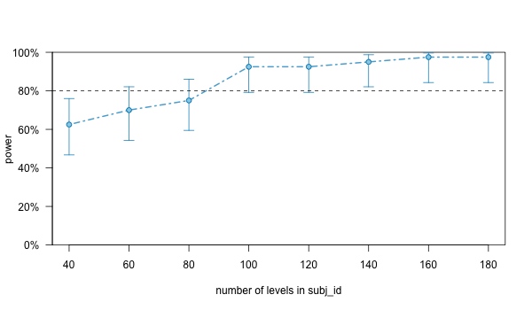

# Seed for random number generation
set.seed(42)Psychology students’ use of ChatGPT
Metadata
Title:
Psychology students’ use of ChatGPT
Description:
In recent years, the development of artificial intelligence (AI) has made rapid progress, particularly in the field of speech recognition and language processing technologies, such as ChatGPT. These AI tools are now available in various applications and are used by numerous users. However, despite the increasing prevalence of these technologies, there are few studies that investigate their potential impact on those who use them. The present study aims to fill this gap by examining the influence of using AI language models on the mental health of psychology students. Based on research findings on negative effects of information and technology overload (Feroz et al., 2021; Ji, 2023; Shao et al., 2022; Swar et al., 2017; Xu & Yan, 2022), the relationship between daily usage behavior, information overload, and the desire for AI-related study content among psychology students will be investigated. In a diary study with call center employees, it was found that openness to experience as a personality trait can reduce the relationship between the use of advanced technologies and information overload (Shao et al., 2022). Moreover, in another study, it was shown that computer-related self-efficacy expectations can weaken the relationship between the use of digital technologies and information overload (Islam et al., 2020). Based on these findings, it will also be investigated whether AI-related self-efficacy expectations, openness to experience, and experiences in using ChatGPT can reduce the relationship between daily usage and information overload.
Study information
Hypotheses:
- The daily use of ChatGPT and similar tools is positively associated with a) increased information overload a) on the same day, b) on the next day.
- The daily use of ChatGPT and similar tools is positively associated with a) an increased desire for AI-related educational content in studies a) on the same day, b) on the next day.
- The positive relationship between the use of ChatGPT and information overload is mitigated by a) general openness to experience, b) ChatGPT-related self-efficacy expectation, c) past experience with the use of ChatGPT and similar tools.
- The relationship between the use of ChatGPT and similar tools with AI-related anxieties on the next day is mediated by information overload.
Design Plan
Study design:
Between and within subjects design.
Randomization:
No randomization is required.
Sampling plan
Existing data:
Registration prior to creation of data.
Explanation of existing data:
No existing data.
Data collection procedures:
Through prolific.
Sample size:
According to the results of power calculations, we seek to recruit 120 participants.
Sample size rationale:
We need at least 120 participants to reach a power of at least 80% to detect the specified pre-determined fixed effects at an alpha level of 0.05. Please see power calculation below for more details:
Power analysis
# Load libraries
library(dplyr)
# Set seed for reproducibility
set.seed(42)
## Simulate multilevel data
# Generate within-person level data
daily_df <- data.frame(
subj_id = as.factor(rep(1:100, each = 5)),
day = rep(1:5, 100),
ChatGPTuse = as.factor(sample(c(1, 2), 500, replace = TRUE, prob = c(0.3, 0.7))),
HoursUse = runif(500, 1, 12),
infooverload = runif(500, 1, 5),
anxiety = runif(500, 1, 5),
KIteach = runif(500, 1, 5),
selfeff = runif(500, 1, 5)
)
# Generate between-person level data
subj_df <- data.frame(
subj_id = as.factor(1:100),
experience = runif(100, 1, 5),
technologyaff = runif(100, 1, 5),
age = runif(100, 18, 40),
gender = as.factor(sample(c(1, 2), 100, replace = TRUE, prob = c(0.5, 0.5))),
extra = runif(100, 1, 5),
open = runif(100, 1, 5),
consc = runif(100, 1, 5),
agree = runif(100, 1, 5),
neuro = runif(100, 1, 5)
)
# Combine both data frames
diary_data <- left_join(daily_df, subj_df, by = "subj_id")library(tidyverse)
# create covariance matrix
cor <- matrix(c(1.0, 0.35, 0.23, 0.29,
0.35, 1.0, -0.19, -0.19,
0.23, -0.19, 1.0, 0.23,
0.29, -0.19, 0.23, 1.0), 4)
cor <- t(cor)
stdevs <- c(0.4, 0.4, 0.4, 0.4)
#stdevs is the vector that contains the standard deviations of your variables
b <- stdevs %*% t(stdevs)
# b is an n*n matrix whose generic term is stdev[i]*stdev[j] (n is your number of variables)
a_covariance <- b * cor #your covariance matrix## Create fixed and random effects
fixed <- c(0.2, # intercept
0.17, # overload effect
0.16, # experience effect
0.17) # interaction effect
res <- 0.79 # residual standard deviation
library(simr)
library(future)
## Create the model
model <- makeLmer(infooverload ~ HoursUse*experience + (1 + HoursUse|subj_id), fixef=fixed, VarCorr = matrix(c(0.4, 0.3, 0.5, 0.4), 2), sigma=res, data=data)
## Power analysis
# sim <- powerSim(model, nsim=100, test = fcompare(infooverload ~ HoursUse + experience + (1 + HoursUse|subj_id)))
# sim
## Add more participants
model_ext_subj <- extend(model, along="subj_id", n=180)
model_ext_day <- extend(model, along="day", n=10)
## Power curve
p_curve <- powerCurve(model_ext_subj, nsim = 40, along = 'subj_id', test = fcompare( ~ HoursUse + experience + (1 + HoursUse|subj_id)), breaks=c(40, 60, 80, 100, 120, 140), progress = T, seed = 23)
# 1. Open jpeg file
png(file="Docs/p_curve.png",
width=600, height=350)
plot(p_curve)
dev.off()
Stopping rule:
Data will be collected until a sufficient sample size is reached (please see power analysis).
Variables
Manipulated variables:
None
Measured variables:
- Experience using with ChatGPT and similar tools
- Past extent of usage of ChatGPT and similar tools
- technology affinity
- personality characteristics (openness, agreeableness, extraversion, neuroticism, conscientiousness)
- demographics (age, gender, study semester, study program)
- daily usage behavior of ChatGPT and similar tools
- yes/ no; if yes:
- which tool(s) were used?
- how many hours?
- for what purpose (study, private)?
- yes/ no; if yes:
- information overload
- AI anxiety
- wish to include training on how to use ChatGPT (or similar tools) in study curricula
- ChatGPT self-efficacy
Dependent variables:
- information overload
- ChatGPT anxiety
- wish to include training on how to use ChatGPT (or similar tools) in study curricula
Independent variables:
- daily usage behavior of ChatGPT and similar tools (yes/ no)
- daily usage behavior of ChatGPT and similar tools (hours)
Analysis plan
Statistical models:
The data have a multilevel structure (daily surveys nested within persons), and therefore we used the lme4 package in R (Bates, Maechler, Bolker, & Walker, 2015) to fit linear mixed effects models to the data. Pvalues were calculated using the lmerTest package in R, which uses a Satterthwaite approximation for degrees of freedom (Kuznetsova, Brockhoff, & Christensen, 2013). In all models, we include random intercepts and slopes for the usage behavior and information overload. We model fixed direct effects (including interaction effects). We model fixed cross-level interaction effects between the extent of using ChatGPT and a) openness to experience, b) ChatGPT-related self-efficacy, c) past experience with ChatGPT and similar tools. Moderated mediation analyses using the R package mediation (Tingley, Yamamoto, Hirose, Keele, & Imai, 2014) were conducted to examine the conditional indirect effects of usage behavior on ChatGPT anxiety through information overload. We first calculate whether there is an indirect effect of usage behavior on ChatGPT anxiety through information overload across the entire sample (i.e., without considering the role of the moderators). Conditional mediation effects are then calculated, establishing whether there is an indirect effect of usage bhavior on AI anxiety at different moderator levels (1 SD below mean, mean, 1 SD above mean) the mean on age; 26.40 years) and older employees (1 SD above the mean on age; 52.16 years). Please see below for an example model specified for independent variable = ChatGPTuse (hours used); mediator = infooverload (information overload); dependent variable = anxiety (ChatGPT anxiety); moderator = experience (previous experience using ChatGPT and similar tools):
Multilevel moderated mediation analysis
library(lme4)
library(mediation)
data <- diary_data
# Create interaction term
data$inter_term <- data$HoursUse * data$experience
# Model 1: mediator model
MedModel <- lmer(infooverload ~ HoursUse + experience + inter_term + (1 + HoursUse| subj_id), data = data)
# Model 2: outcome model
OutModel <- lmer(anxiety ~ infooverload + HoursUse + experience + inter_term + (1 + HoursUse + infooverload| subj_id), data = data)
mod_med_results <- mediation::mediate(MedModel, OutModel, treat = "HoursUse", mediator = "infooverload", control.value = 0, treat.value = 1, sims = 1000)
summary(mod_med_results)
Causal Mediation Analysis
Quasi-Bayesian Confidence Intervals
Mediator Groups: subj_id
Outcome Groups: subj_id
Output Based on Overall Averages Across Groups
Estimate 95% CI Lower 95% CI Upper p-value
ACME 0.000254 -0.004630 0.01 0.91
ADE 0.027774 -0.054699 0.11 0.53
Total Effect 0.028028 -0.054901 0.11 0.52
Prop. Mediated 0.001199 -0.460541 0.50 0.94
Sample Size Used: 500
Simulations: 1000 Transformations:
Within-person variables will be person-mean centered; Between-person variables will be grand-mean centered.
Inference criteria:
Confidence intervals and p-values.
Missing data:
We use complete observations.